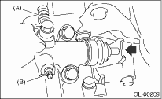
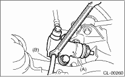
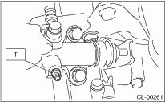

NOTE:
Bleed air from the oil line with help of a co-worker.
1. Remove the air intake chamber. (Non-turbo model) 
2. Remove the intercooler. (Turbo model)
3. Fit one end of a vinyl tube into the air bleeder of the operating cylinder, and put the other end into a brake fluid container.

|
(A) |
Clutch hose |
|
(B) |
Air bleeder |
4. Slowly depress the clutch pedal and keep it depressed. Then open the air bleeder to discharge air together with the fluid. Release the air bleeder for 1 or 2 seconds. Next, with the bleeder closed, slowly release the clutch pedal.

|
(A) |
Operating cylinder |
|
(B) |
Vinyl tube |
5. Repeat these steps until there are no more air bubbles in the vinyl tube.
CAUTION:
Cover the bleeder with cloth to prevent brake fluid from being splashed on surrounding parts when loosening the bleeder.
6. Tighten the air bleeder.
Tightening torque:
T: 7.8 N·m (0.8 kgf-m, 5.8 ft-lb)

7. After depressing the clutch pedal, make sure that there are no leaks evident in the entire system.
8. After bleeding air from system, ensure that the clutch operates properly.